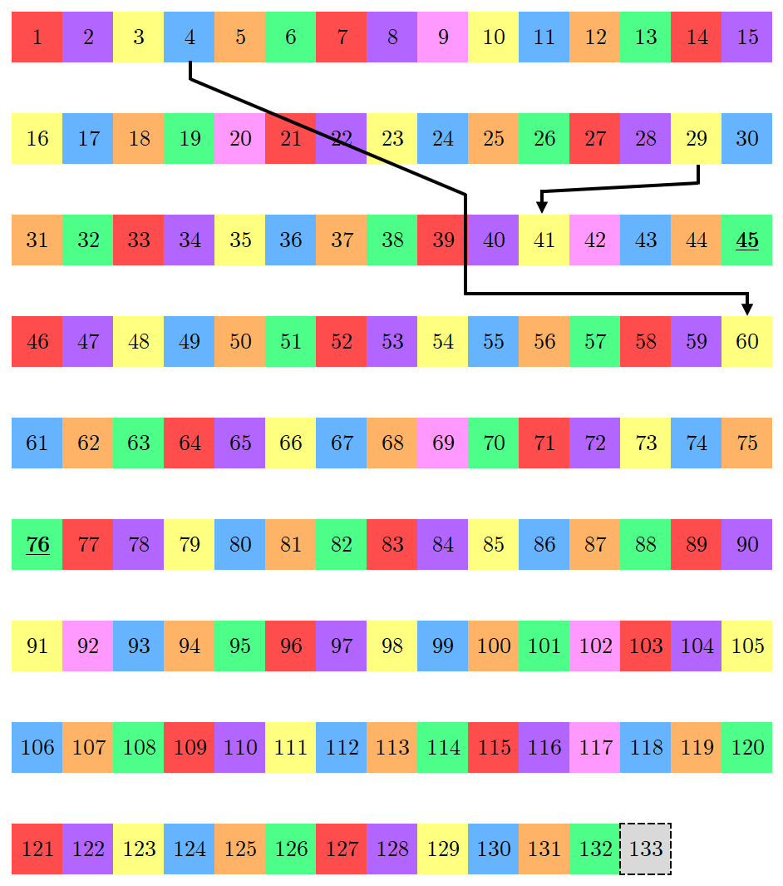
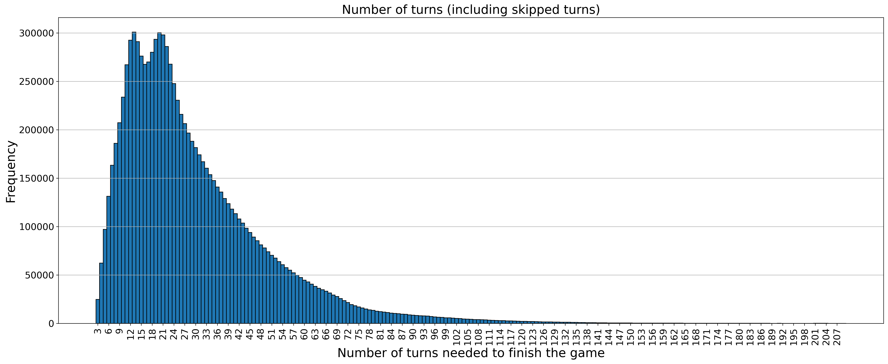
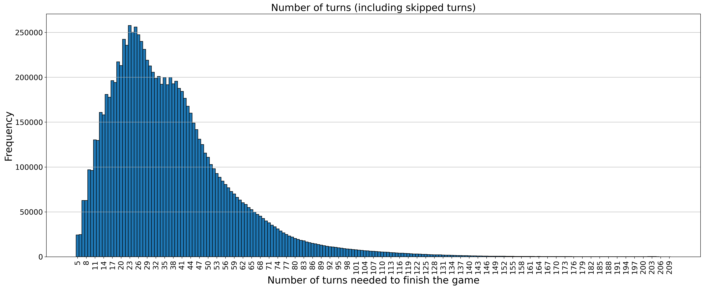
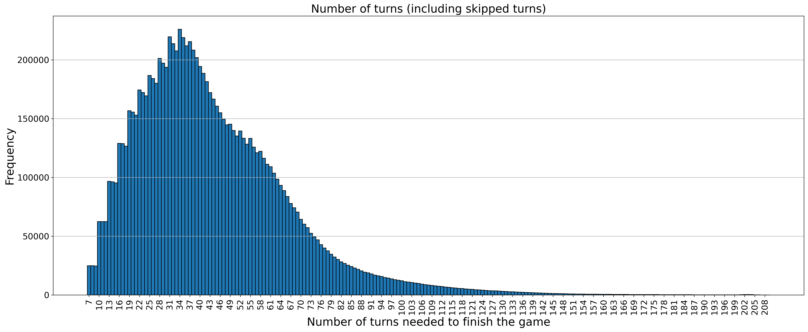
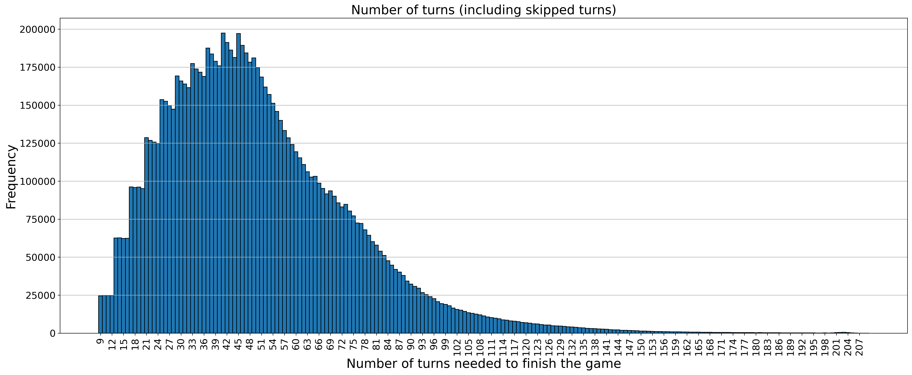

Fernando Garcia Cortez
A look at Candy Land through the eyes of Monte Carlo
It should come as no surprise that I enjoy board games, specially when they have big maps and lots of components. While browsing for new games at the store, I wondered about how different board games geared towards a younger audience are designed. This category is, perhaps, a bit subjective, so I started looking for less complex games. Compared to games like tabletop Warhammer, Monopoly seems like an easier game to explain. Further down the line, we have games like Sorry!, where a player's options become more and more limited. At the very bottom of the line we have games like Candy Land, where during gameplay, a player has no decisions on how the game plays out.
In Candy Land, players take turns drawing cards from a single face-down deck. Each card shows a color, and the player moves their piece to the next space on the board that matches that color. Although the cards in the deck are randomly sorted, once the deck is shuffled, it essentially determines who will win.
If players empty the deck, then the discard pile is shuffled again and used as the new deck, and the game continues...
To illustrate how the cards work, suppose you're currently on space 6. Although this is a green space, its color doesn't affect future turns. If you draw a card showing an orange square, you move your piece to the next orange space on the board — in this case, space 12.
To win, you must draw a card whose color does not appear on any remaining spaces ahead. In that case, your piece moves directly to the final rainbow tile (shown here as the gray 133rd space).
There are a few special cases on the board. The 4th and 29th spaces (blue and yellow, respectively) are bridge spaces—if you land exactly on one, you're transported to a higher space as shown on the map. Spaces 45 and 76 are licorice spaces; landing on them means you lose your next turn.
Pink spaces are not associated with any color cards. Instead, they represent dessert (yes, as in food!) spaces, each tied to a specific dessert card. These are located at spaces 9, 20, 42, 69, 92, 102, and 117. If you draw a dessert card from the game deck, you're transported directly to the matching dessert space—this can move you forward or backward, even pulling you away from the final tile if you're close to winning!
For reference, these pink tiles have the following dessert food items on them:
9 - Cupcake
20 - Ice cream
42 - Star
69 - Gingerbread
92 - Lollipop
102 - Popsicle
117 - Chocolate
Lastly, some color cards have two instances of the same color, meaning that you move to the 2nd space of that color ahead of you.
It is then clear that the game functions entirely based on the order of cards in the shuffled deck. Further, game mechanics such as licorice spaces and dessert spaces are gateways to interesting games, adding a bit of flavor without the aid of the player(s).
In what follows, I show data gathered after playing 10 million (that's right: 10,000,000) games with the following condition: If the game goes through three decks, it is terminated. This has two purposes: firstly, it simulates kids getting bored and moving onto something else. Secondly, it avoids running long games (although unlikely, what are the chances of my computer getting stuck on a candy land game loop?!)
Lastly, a distinction must be made. When I speak of numbers of cards used, I refer to cards pulled from the deck in a given game. This number may differ from what I refer to as the number of turns needed to finish the game, where someone's licoriced turn contributes to the counter of turns but not to the counter for cards used. If a game has different values for these counter, it is clear that we can find the number of times the group in general got licoriced.
Single Player Games
Although Candy Land is usually played with at least 2 players, it is nonetheless interesting to study games where only one person is drawing cards from the pile.
- 584 games were terminated before completion.
- The player was licoriced, at least once, in 3,181,492 of the games played.
- The player passed through bridges, at least once, in 4,484,997 of the games played.
- From these occurrences, only 1,708,660 of them are mutual (i.e., the player was licoriced and passed through a bridge at least once).
Below is a histogram with the frequency of games sorted by the number of turns it took to finish them.
This is intereting in many ways. For some reason, games of 16 turns (for one player) are "less likely" than games with 15 or 17 turns. At the time of writing this post, I don't have a satisfying explanation for this local minimum.
Multiplayer Games
Winner player proportions
- 2 players: 5,088,778/4,910,278.
- 3 players: 3,441,288/3,331,600/3,225,734
- 4 players: 2,613,847/2,532,088/2,462,093/2,389,907
Number of terminated games
- 2 players: 944 games.
- 3 players: 1378 games.
- 4 players: 2065 games.
Number of games where the winner was licoriced at least once:
- 2 players: 1,867,318 games.
- 3 players: 1,294,166 games.
- 4 players: 959,292 games.
Number of games where the winner was bridged at least once:
- 2 players: 3,712,901 games.
- 3 players: 3,401,620 games.
- 4 players: 3,196,492 games.
Number of games where the winner was licoriced and bridged at least once:
- 2 players: 838,240 games.
- 3 players: 564,046 games.
- 4 players: 427,566 games.
When we plot the frequency of length of games (number of turns needed to finish the game), we observe that a sawtooth pattern forms on the left hand side:
2 players.
3 players.
4 players.
If we stare long enough at these histograms, we will be able to ask good amount of questions about their shapes and behaviors. For instance, what is casusing the sawtooth pattern? From the perspective of the first player, the shortest game consists of three turns: drawing the chocolate (position 117) card, then any combination of at least one double color card and an additional (single or double) color card of the same color. To illustrate this, the chocolate card will push us to position 117. A double red card will bump us to 121 then 127. Then a red card (or double red) will send us to the rainbow (133th space) tile.
With this in mind, we can think of games of duration 6 in a two player game to consist of this sequence initiated by the second player, while the first player does something else. Although this discussion paritally alleviates the question on why these patterns occur locally, it does not answer why we get different levels (i.e., different teeth). In particular, we observe the sudden increase in the frequency of games with 12 and 13 turns in a four player game.
There is also a plateau at roughly 38 turns in a 2 player game. This plateu merges into the main shape of the distribution as the number of players increases, but at this point I don't have a clear explanation for it.
Closing remarks
This little experiment was motivated by the question: Is Candy Land a fair game? It's a question we can now partially answer—the earlier a player moves through the map, the greater their chances of winning. So, even if you can't control the order of the cards in the deck, you might still be able to fight your way to becoming player number one.
While trying to answer this question, many others opened up. In a future post, I will tackle some of the questions posed here.